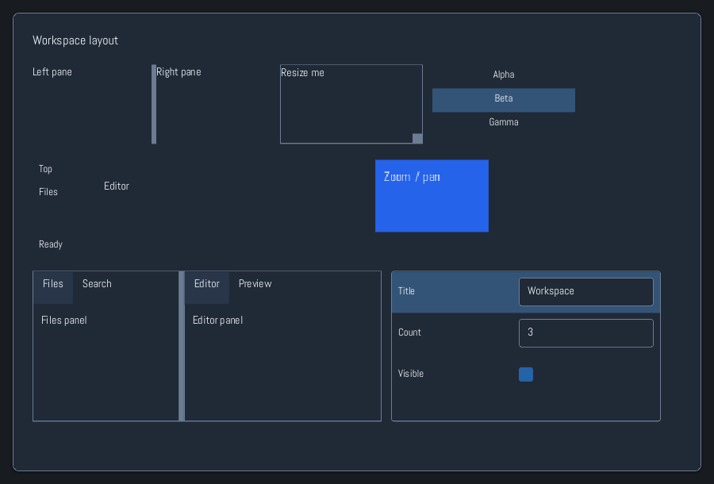
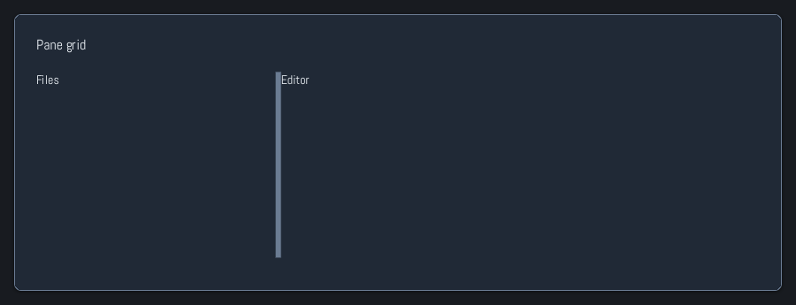

Browse documentation
Resizable layouts
Arrange application content with split panes, resizable regions, zoom, and lists.
Import
Load the optional component layer before using the examples below.
require "zaniah/ui"Split and resize
SplitPane separates two elements. PaneGrid supports a resizable grid with stable pane IDs.

Zaniah::UI::SplitPane.new(
Zaniah::UI::Label.new("Files"),
Zaniah::UI::Label.new("Editor"),
ratio: 0.35)
Zaniah::UI::Resizable.new(
Zaniah::UI::Label.new("Resize me"), width: 180, height: 100)
Five-region dock panel
DockPanel is a simple top/right/bottom/left/center layout; use DockWorkspace when users need draggable tabs.
Zaniah::UI::DockPanel.new(
center: Zaniah::UI::Label.new("Editor"),
left: Zaniah::UI::Sidebar.new(
Zaniah::UI::Label.new("Files"), width: 160))
Pane grid
PaneGrid assigns a stable ID and content to each pane; track sizes use Zaniah layout units.

Zaniah::UI::PaneGrid.new(
[[[:files, Zaniah::UI::Label.new("Files")],
[:editor, Zaniah::UI::Label.new("Editor")]]],
columns: [Zaniah.fr(1), Zaniah.fr(2)],
rows: [Zaniah.fr(1)])
Virtual list and zoom
ListView virtualizes long lists. ZoomPanView pans and scales content without changing its local coordinates.
Zaniah::UI::ListView.new(%w[Alpha Beta Gamma],
height: 100, selected: 1)
Zaniah::UI::ZoomPanView.new(
Zaniah::UI::Label.new("Canvas"), zoom: 1.3)
API summary
Constructor options and behaviors are drawn from the component reference.
| Component | Constructor and methods | Variants or behavior |
|---|---|---|
SplitPane | (first, second, orientation:, ratio:, min:, max:); on_change | horizontal/vertical, draggable separator |
PaneGrid | (panes, columns:, rows:, divider_size:, minimum:, keyboard_step:); replace, on_resize | arbitrary resizable grid, stable pane IDs |
Resizable | (content, width:, height:, min_width:, min_height:, max_width:, max_height:); on_resize | drag or keyboard resize |
ZoomPanView | (content, zoom:, min_zoom:, max_zoom:); fit, zoom_to, view_to_content | drag to pan, pinch or Ctrl+wheel to zoom, +/-/0 when focused |
DockPanel | (center:, top:, right:, bottom:, left:) | five-region layout |
ListView | (items, height:, row_height:, selected:); on_select | virtual rows and keyboard selection |
Accessibility
Resizable separators are keyboard operable. Lists expose list and listitem roles; zoom shortcuts work when focused.
| Component | Semantic role |
|---|---|
SplitPane | group/separator |
PaneGrid | group/separator |
Resizable | group/separator |
ZoomPanView | group |
DockPanel | group |
ListView | list/listitem |